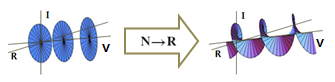

価数による複素数の3次元的表現
複素数を3次元的に描画する空間は，3種類知られている．複素平面に実数軸（例えばゼータ関数の値）を直交させた空間，複素平面に位数軸（位数とは虚数と価数の積）を直交させた空間，そして複素平面に価数軸（価軸）を直交させた空間である．本稿では3つ目の価軸を直交させた空間について解説する．この空間を本稿では以下「価数空間」という言葉で表す．
そもそも価軸を走る数とは，複素平面を何周するかを表す数のことで，有限周回の場合は三角関数（ラジアン）で，多価関数ではしばしばで表される数である．2次元的な複素平面では描画表現できなかった数であり，複素平面で収まる複素数であっても，価軸の値がゼロにならない場合が多い．つまり，平面で収まっていた描画が価数空間では3次元的に広がった形をとる場合が多くある．
価数空間を図で表すと以下のような空間になる．実軸，虚軸に対し，価軸を直交させた空間である．
ところで，複素数に価数はどのように含まれているのだろうか．ここで，という複素数を考えたい．オイラーの公式で登場するの三角関数部分をと置き換えた数である．
このは分解できるので，これを分解する．すると，となる．先の複素数は，となる．
は径（dia）と呼ぶことにし，一周する円の半径を表す．は間隔（interval）とし，価軸における円同士の間隔を表す．いずれもやには整数だけでなく，実数や多項式なども入れることができ，その場合には楕円や不均質な間隔にもなる．
このようにには径と間隔が含まれていたわけであるが，これらを除いて残った数を価数と呼びたい．価数は虚数のような単位をとり，あらためを価数単位と呼びたい．
なお，価数単位を考えるとき，という数に惹かれる．である．確かに，価数単位はに似たものに違いないが，その正体がどんな値であるかという追究は，あまり意味を持たない．多価性を持つ純虚数として，あるいはそれを分解して得られた数として，価数単位の正体に関する追究に満足するべきである．もし追究したい者があれば，真数が負である対数について，価数を考慮した計算公式も含めて検討するべきである．困難だが不可能な問題ではないと思う．
この価数単位をと考えたい心理は，実数単位と虚数単位とを象徴的に考えあわせれば，たとえ数学の知識が少なくても複素空間に関する深い事実を直観できる気がしてくるので，その心理を抑えとどめるものではない．
さて，実際に下図のように円が整数間隔で連なった複素数について，間隔の整数性を実数に拡大すると，らせん面になる．これは価数空間では基本的な描画例である．
以上，複素数を3次元空間で描画する合理的な分解について考察してきた．ここで述べてきた分解が描画と一致するか検証するため，筆者は長い時間を要した．価軸が形成する空間の性質が，実数空間と若干異なっていると思われることは，虚軸が複素平面にもたらす性質の異質さと似ており，両者を考慮すると複素平面ないし価数空間に内在する数的性質をより厳密に調べ定めることができるかもしれない．
径と間隔によって，例えばコーシーの定理が拡張を迫られるように，複素関数論を今一度見直すことができ，量子位相，流体力学，通信工学など，複素数を拡張する議論が直接役立つ分野に貢献する可能性がある．
最後に，ゼータ関数による素数の公式の探索においても，本考察は驚くべき自由な解釈を提供する．もし興味を持たれた方は探究してみることをお勧めする．筆者は素数の公式についてこれ以上探究する気はなくしている．価数空間を実装しシミュレートできるプログラムやアプリが現時点で存在していないことと，現代において広く利用されている暗号の安全性が脅かされる懸念から，本稿の公開を躊躇してきたが，知の価値と数学利用の倫理を問う意味で公開することを決心した次第である．